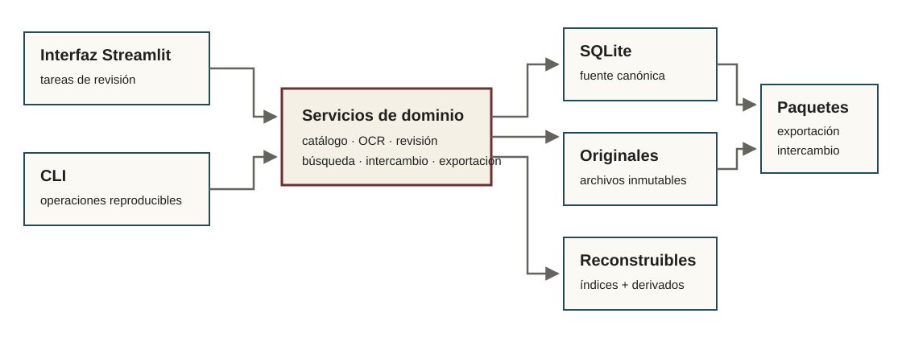

Arquitectura pública
Referencia técnica
La aplicación combina una interfaz Streamlit y un CLI sobre servicios de dominio. SQLite conserva el estado canónico del proyecto; originales, derivados e índices viven en rutas separadas.

Persistencia
SQLite registra catálogo, archivos, corridas, selecciones, revisiones, autoridades, menciones, relaciones, tareas, auditorías e intercambio. Las migraciones son explícitas y se ejecutan después de un backup verificado.
Originales y derivados
Los originales se registran con identidad y huellas. Los derivados de preparación, OCR y visualización se relacionan con su fuente y pueden reconstruirse cuando el contrato lo permite.
Revisiones e historial
Las operaciones de edición conservan revisiones e historial. Deshacer, rehacer o adoptar una nueva candidata no deben destruir la procedencia de estados anteriores.
Catálogo y autoridades
Las unidades de catálogo, autoridades, menciones y relaciones son contratos distintos. El árbol principal facilita navegación, pero la interfaz distingue custodia, jerarquía documental y ubicación física.
Procesamiento y selección
La extracción crea candidatas versionadas. Una selección explícita decide qué candidata alimenta la capa editable. Cambiar la selección no debe borrar correcciones sin un procedimiento de rebase o conflicto.
Intercambio y backups
El intercambio usa paquetes con manifiestos y simulación. Google Drive es sólo un transporte opcional de ZIP. Backups y pruebas de recuperación se administran dentro del proyecto y no se confunden con intercambio.
Exportaciones
Las exportaciones públicas incluyen configuración y huellas cuando corresponden, de modo que puedan relacionarse con el estado del corpus que las produjo.
Extensiones opcionales
Surya, búsqueda semántica, incorporación desde plataformas y transcripción audiovisual son extensiones instalables. La ausencia de una extensión no cambia la identidad del proyecto ni su SQLite.
Para detalles de implementación y contratos vigentes, consultá Arquitectura y modelo actual en el repositorio.